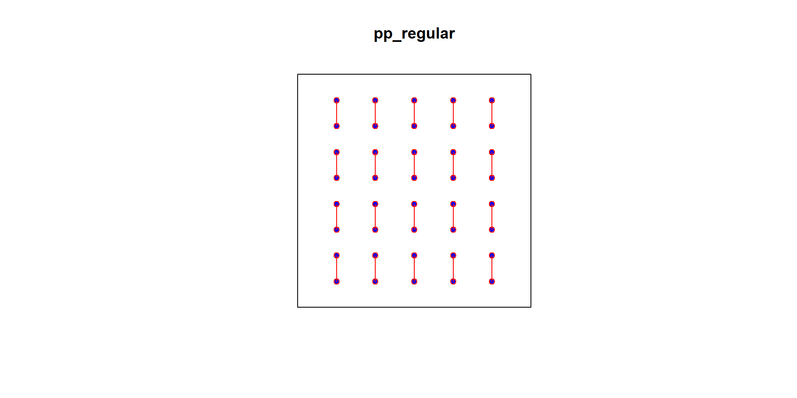
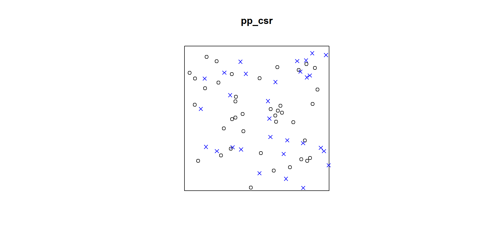
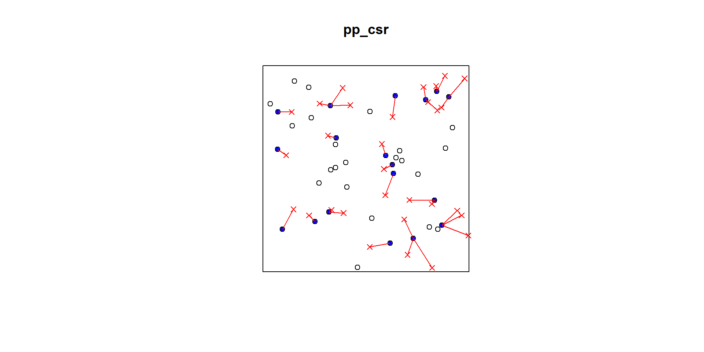
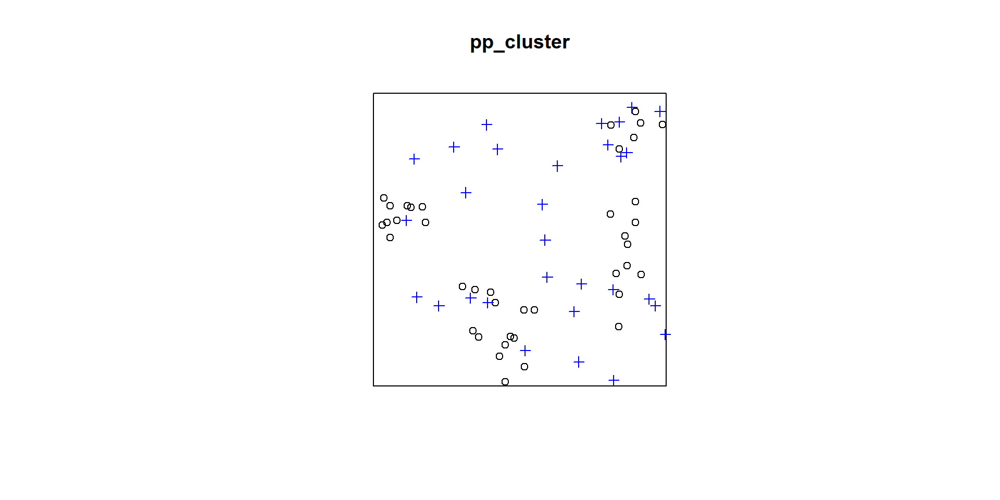
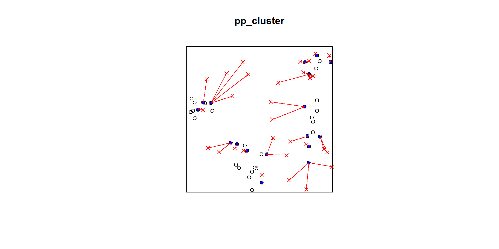
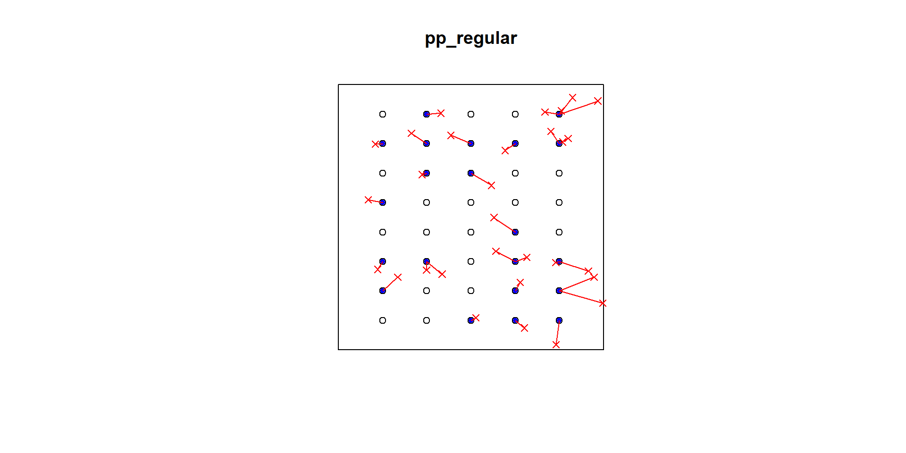
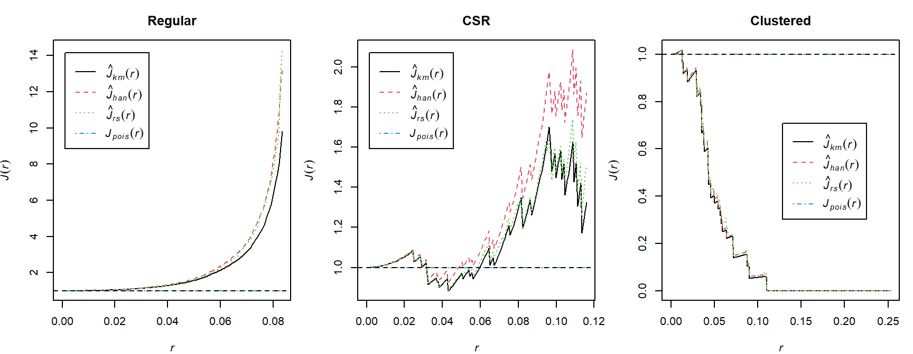
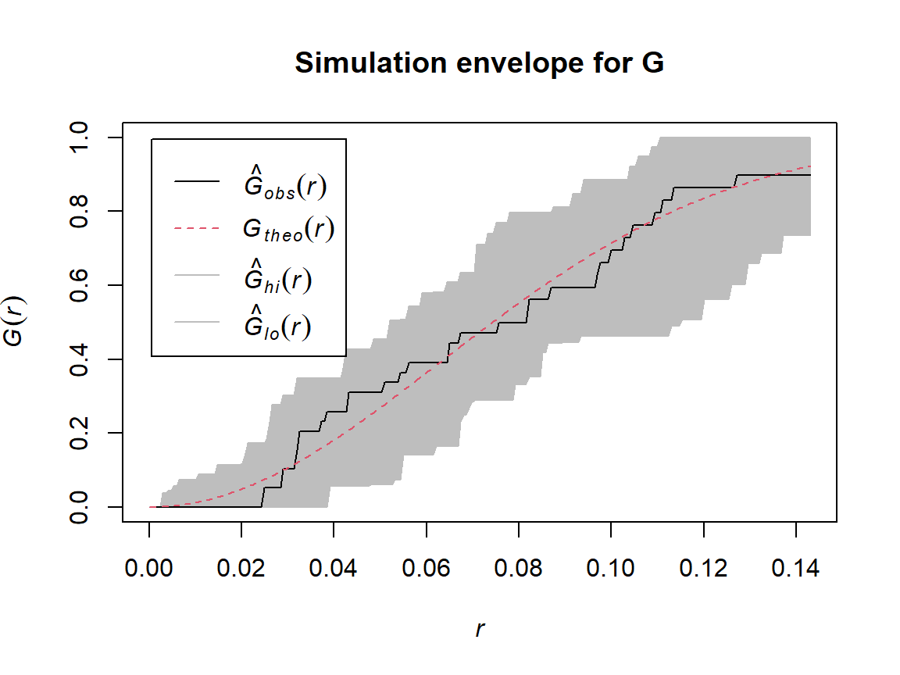

# which is the same as nndist e2e=nndist(swp)dmin =nndist(swp)plot(swp)xy =cbind(swp$x, swp$y)ord <-rev(order(dmin))far25 <- ord[1:71]neighbors <- wdmin[far25]points(xy[far25, ], col='blue', pch=20)points(xy[neighbors, ], col='red')# drawing the lines, easiest via a loopfor (i in far25) {lines(rbind(xy[i, ], xy[wdmin[i], ]), col='red')}
# which is the same as nndist e2e=nndist(swp)dmin =nndist(pp_csr)plot(pp_csr)xy =cbind(pp_csr$x, pp_csr$y)ord <-rev(order(dmin))far25 <- ord[1:40]neighbors <- wdmin[far25]points(xy[far25, ], col='blue', pch=20)points(xy[neighbors, ], col='red')# drawing the lines, easiest via a loopfor (i in far25) {lines(rbind(xy[i, ], xy[wdmin[i], ]), col='red')}
# which is the same as nndist e2e=nndist(swp)dmin_cluster =nndist(pp_cluster)plot(pp_cluster)xy_cluster =cbind(pp_cluster$x, pp_cluster$y)ord <-rev(order(dmin_cluster))far25 <- ord[1:40]neighbors <- wdmin_cluster[far25]points(xy_cluster[far25, ], col='blue', pch=20)points(xy_cluster[neighbors, ], col='red')# drawing the lines, easiest via a loopfor (i in far25) {lines(rbind(xy_cluster[i, ], xy_cluster[wdmin_cluster[i], ]), col='red')}
X Y
1 -0.05610447 -0.0005489143
2 -0.27914228 -0.0569200607
3 -0.41836751 -0.0294786165
4 -0.61092147 -0.0553659112
5 -0.63425768 0.0879645408
6 -0.13475501 -0.1903105666
R code
# which is the same as nndist e2e=nndist(swp)dmin_regular =nndist(pp_regular)plot(pp_regular)xy_regular =cbind(pp_regular$x, pp_regular$y)ord <-rev(order(dmin_regular))far25 <- ord[1:40]neighbors <- wdmin_regular[far25]points(xy_regular[far25, ], col='blue', pch=20)points(xy_regular[neighbors, ], col='red')# drawing the lines, easiest via a loopfor (i in far25) {lines(rbind(xy_regular[i, ], xy_regular[wdmin_regular[i], ]), col='red')}

Point-to-event distance
For an arbitrary reference location \(\mathbf{u}\), the empty-space distance is
Several methods for deciding whether a point pattern is completely random, using e2e and p2e distances that could be measured in a field study. Common methods include:
Clark–Evans index and test;
Hopkins–Skellam index and test;
nearest-neighbour distribution function \(G\);
empty-space distribution function \(F\); and
combined diagnostic \(J\).
Clark–Evans method
Clark–Evans index
Clark and Evans proposed the following:
Take the average of the e2e distances (D) for m randomly sampled points in a point pattern (or for all data points),
\[
\overline{D}=\frac{1}{n}\sum_{i=1}^{n}D_i
\]
be the observed mean nearest-neighbour distance. Under an ideal homogeneous Poisson process with intensity \(\lambda\),
Divide the average observed e2e distance to the expected value under CSR (Cliff, Ord, 10981, pp.105)
\[
R=\frac{\overline{D}}{1/(2\sqrt{\lambda})}.
\]
The Clark-Evans test of CSR is performed by approximating the distribution of R under CSR by a normal distribution with (Baddeley, A., Rubak, E., Turner, R., Spatial Point Patterns, Methodology and Applications in R, page 258):
\[R \sim N\left(1,\; \frac{4-\pi}{\pi n}\right)\]
The spatstat functions clarkevans and clarkevans.test perform these calculations.
An important weakness of the Clark-Evans test is that it assumes that the point process is stationary. An inhomogeneous point pattern will typically give \(R < 1\), and can produce spurious significance.
Interpreting the Clark–Evans index
\(R=1\): consistent with CSR;
\(R>1\): events are farther apart than expected, suggesting regularity;
\(R<1\): events are closer together than expected, suggesting clustering.
Hopkins and Skellam proposed taking the e2e distances D for m randomly sampled data points, and the p2e distances E for an equal number m of randomly sampled spatial locations.
If the point pattern is completely random, events are independent of each other, so the distance from an event to the nearest other event should have the same probability distribution as the distance from a fixed spatial location to the nearest event.
That is, the values D and E should have the same distribution. The Hopkins-Skellam Index is calculated as follows:
A = 1 is consistent with a completely random pattern, A > 1 with regularity, A < 1 is consistent with clustering.
The Hopkins-Skellam test compares the value of A to the F distribution with parameters (2m,2m).
Interestingly the Hopkins-Skellam index is much less sensitive than the Clark-Evans index to problems such as edge effect bias and spatial inhomogeneity.
Thus, \(\hat{G}(r)\) is simply the proportion of nearest-neighbour distances that are less than or equal to \(r\). It is the empirical cumulative distribution function (ECDF) of the nearest-neighbour distances.
First calculate the unique nearest neighbour distances between events.
Count how many events exist that are less than the distances (either empirical or chosen at an interval - I will use interval (0-max dist) with small increments). (This could be achieved using plot(Gest()) function in R. Always a good practice to do this manually first.)
R code
r_values = sequence <-seq(from =0, to =0.2, by =0.005)G_empirical =vapply( r_values,function(r) mean(D <= r),numeric(1))head(data.frame(r = r_values, G = G_empirical), 10)
G_csr <-Gest(pp_csr, correction =c("rs", "km"))plot(G_csr, main ="Nearest-neighbour distribution function")
Comparing G across patterns
F function - Cumulative frequency distribution of distance E from an arbitrary point to the nearest (other) event - Empty-space distribution function F
The empty-space function is
\[
F(r)=\Pr(E\le r).
\]
It is the proportion of locations in the study region that lie within distance \(r\) of an event.
Let
\[
E_1,E_2,\ldots,E_m
\]
be the distances from \(m\) randomly selected locations in the study region to their nearest event.
Thus, \(\hat{F}(r)\) is simply the proportion of randomly selected locations whose nearest event is within a distance \(r\). Equivalently, it is the empirical cumulative distribution function (ECDF) of the point-to-event (empty-space) distances.
In practice, the distances
\[
E_1,E_2,\ldots,E_m
\]
are obtained by generating a large number of random locations uniformly over the study region and computing the distance from each location to its nearest observed event.
Under CSR,
\[
F_{\text{CSR}}(r)=1-\exp(-\lambda\pi r^2).
\]
Manual approximation to F
R code
set.seed(23)randompoints =matrix(runif(60),ncol=2)plot(pp_csr)points(randompoints, col ="blue", pch=4)

R code
p2e_distances_csr =NULLmins_csr =NULLxy =cbind(pp_csr$x, pp_csr$y)# sqrt((xy[2,1]-randompoints[1,1])^2+(xy[2,2]-randompoints[1,2])^2)# sqrt((xy[1,1]-randompoints[2,1])^2+(xy[1,2]-randompoints[2,2])^2)for(i in1:dim(randompoints)[1]){dist1 =matrix(pairdist(rbind(randompoints[i,],xy)),41)p2e_distances_csr =c(p2e_distances_csr,min(dist1[2:41,1]))mins_csr =c(mins_csr,which.min(dist1[2:41,1]))}plot(pp_csr)ord <-rev(order(p2e_distances_csr))far25 <-1:dim(randompoints)[1]neighbors <- mins_csrpoints(randompoints, col='red', pch=4)points(xy[mins_csr, ], col='blue', pch=20)# drawing the lines, easiest via a loopfor (i in far25) {lines(rbind(xy[mins_csr[i], ], randompoints[i, ]), col='red')}

Cluster Pattern
R code
plot(pp_cluster)points(randompoints, col ="blue", pch=3)

R code
p2e_distances_cluster =NULLmins_cluster =NULLxy_cluster =cbind(pp_cluster$x, pp_cluster$y)for(i in1:dim(randompoints)[1]){dist1 =matrix(pairdist(rbind(randompoints[i,],xy_cluster)),41)p2e_distances_cluster =c(p2e_distances_cluster,min(dist1[2:41,1]))mins_cluster =c(mins_cluster,which.min(dist1[2:41,1]))}plot(pp_cluster)ord <-rev(order(p2e_distances_cluster))far25 <-1:dim(randompoints)[1]neighbors <- mins_clusterpoints(randompoints, col='red', pch=4)points(xy_cluster[mins_cluster, ], col='blue', pch=20)# drawing the lines, easiest via a loopfor (i in far25) {lines(rbind(xy_cluster[mins_cluster[i], ], randompoints[i, ]), col='red')}

Regular Pattern
R code
p2e_distances_regular =NULLp2e_mins_regular =NULLxy_regular =cbind(pp_regular$x, pp_regular$y)for(i in1:dim(randompoints)[1]){dist1 =matrix(pairdist(rbind(randompoints[i,],xy_regular)),41)p2e_distances_regular =c(p2e_distances_regular,min(dist1[2:41,1]))p2e_mins_regular =c(p2e_mins_regular,which.min(dist1[2:41,1]))}plot(pp_regular)ord <-rev(order(p2e_distances_regular))far25 <-1:dim(randompoints)[1]neighbors <- p2e_mins_regularpoints(randompoints, col='red', pch=4)points(xy_regular[p2e_mins_regular, ], col='blue', pch=20)# drawing the lines, easiest via a loopfor (i in far25) {lines(rbind(xy_regular[p2e_mins_regular[i], ], randompoints[i, ]), col='red')}

F function using spatstat
R code
F_csr <-Fest(pp_csr, correction =c("rs", "km"))plot(F_csr, main ="Empty-space distribution function")
Comparing F across patterns
J function
The \(J\) function combines \(F\) and \(G\):
\[
J(r)=\frac{1-G(r)}{1-F(r)},
\]
for distances where
\[
F(r)<1.
\]
Under CSR,
\[
J(r)=1.
\]
Interpreting J
\(J(r)>1\): consistent with inhibition or regularity at scale \(r\);
\(J(r)<1\): consistent with clustering at scale \(r\);
\(J(r)\approx1\): consistent with CSR at scale \(r\).

Simulation envelopes
A visual comparison with a theoretical curve does not account for random variation. Simulation envelopes provide a reference band under a fitted null model.
R code
set.seed(2026)env_G <-envelope( pp_csr,fun = Gest,nsim =39,correction ="km",verbose =FALSE)plot(env_G, main ="Simulation envelope for G")

First- and second-order properties
First-order structure
The first-order property of a point process is its intensity:
It describes how the expected event density varies over space.
Second-order structure
Second-order properties describe association between pairs of events.
They address questions such as:
Are events unusually close together?
Are short interpoint distances suppressed?
At which distance scales does dependence occur?
Why intensity must be handled first
A pattern can look clustered because the intensity is high in one part of the region and low elsewhere, even when events are conditionally independent.
Therefore:
model or estimate first-order intensity;
examine residual second-order dependence;
avoid attributing inhomogeneity directly to point interaction.
Quadrat-based second-order diagnostics
Morisita index
Suppose \(n\) events are divided among \(m\) quadrats with counts
\[
n_1,n_2,\ldots,n_m.
\]
The number of ordered pairs in quadrat \(j\) is
\[
n_j(n_j-1).
\]
The observed fraction of ordered pairs in the same quadrat is